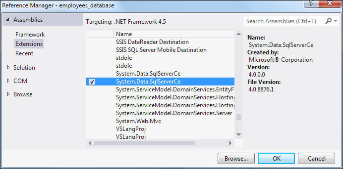
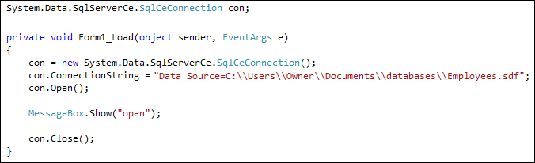

Connect to a SQL Server Express Database with C# .NET
Close your entire Project down from the previous section (File > Close Project or Close Solution), because we're going to be copying the database we just created. We're doing this so that we don't run into any problems with this error:
"An attempt to attach an auto-named database ..."
To find your database, have a look in your Visual Studio Projects folder, usually located in the Documents folder. Find the folder with the name of the Project you just closed down. You should see the Employees.sdf file. If you can't find it that way, do a search through the Windows Start menu.
Once you've found the database, copy the SDF file to the Documents folder (My Documents in Windows XP). You can create a new folder for this. Call it databases. Copy your database to this new folder.
Now that you have moved the database, create a New project in C# (File > New Project). Give it the name employees_database.
Connecting to a SQL Server Express Database
To connect to a database using SQL Server Express, you first need to set up a SQL Connection object. You then need something called a connection string to tell C# where the database is.
If you're using a Compact SQL Server database (Local Dataase) then the easiest
connection object to use is the SqlServerCe object. If you have Visual
Studio Express 2012, however, you need to add a reference in order to get the
various SqlServerCe objects. From the menu bar at the top of Visual Studio Express
2012 click Project. From the Project menu, select Add Reference.
You'll then see the following dialogue box appear:

On the left hand side, click on the Extensions item, you'll then see a list of objects you can add to your project. Scroll down to near the bottom and you'll see an item for System.Data.SqlServerCe. You may see two of these, a later version and an earlier version. Hold your mouse over the latest version and you'll see a checkbox appear. Put a check in the checkbox and then click OK. You will now be able to use the SqlServerCe objects.
To set up a SqlServerCe connection variable, double click the blank form. Just outside of the Form Load event add the following:
System.Data.SqlServerCe.SqlCeConnection con;
When you type a dot after SqlServerCe you'll see lots of SqlCe objects appear. We're using the SqlCeConnection object and giving it the name con.
Inside of the Form Load event, we can create a new con object. Add the following line:
con = new System.Data.SqlServerCe.SqlCeConnection();
A connection object needs a connection string. This points the connection object to where your database is. Add the following line to your code:
con.ConnectionString = "Data Source=C:\\Users\\Owner\\Documents\\Employees.sdf";
ConnectionString is a Property of connection objects. After an equal sign, you type the path to your database file. The path needs to go after the text "Data Source=". Notice where all the double quotes are. Notice, too, that we've used two backslash characters. The backslash character is considered a special character in C# programming, so it needs to be escaped. To escape a backslash character (or any other character) just type another backslash before it.
To try to open a connection, you need to issue the Open command:
con.Open( );
Next, add message box to see if everything is working OK:
Next, add message box to see if everything is working OK:
MessageBox.Show("Connection Open");
If you have opened a connection, then you need to close it:
con.Close( );
Once you've added the lines above, you code should look like this:

Run your programme and you should see the message box appear when you click your button.
Stop your programme and return to your code. You can delete or comment out the message box.
In th enext section below, we'll take a look at DataSets and DataAdapters.